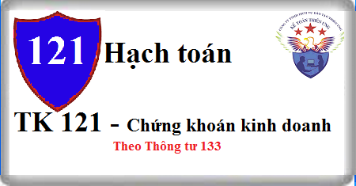

Cách hạch toán Tài khoản 121 theo Thông tư 133, cách hạch toán Chứng khoán kinh doanh, kết cấu nội dung Tài khoản 121 – Chứng khoán kinh doanh
1. Nguyên tắc kế toán Tài khoản 121 - Chứng khoán kinh doanh
a) Tài khoản này dùng để phản ánh tình hình mua, bán và thanh toán các loại chứng khoán theo quy định của pháp luật nắm giữ vì mục đích kinh doanh (kể cả chứng khoán có thời gian đáo hạn trên 12 tháng mua vào, bán ra để kiếm lời). Chứng khoán kinh doanh bao gồm:
- Cổ phiếu, trái phiếu niêm yết trên thị trường chứng khoán;
- Các loại chứng khoán và công cụ tài chính khác.
Tài khoản này không phản ánh các khoản đầu tư nắm giữ đến ngày đáo hạn, như: Các khoản cho vay theo khế ước giữa 2 bên, tiền gửi ngân hàng, trái phiếu, thương phiếu, tín phiếu, kỳ phiếu,... nắm giữ đến ngày đáo hạn.
b) Chứng khoán kinh doanh phải được ghi sổ kế toán theo giá gốc, bao gồm: Giá mua cộng (+) các chi phí mua (nếu có) như chi phí môi giới, giao dịch, cung cấp thông tin, thuế, lệ phí và phí ngân hàng. Giá gốc của chứng khoán kinh doanh được xác định theo giá trị hợp lý của các khoản thanh toán tại thời điểm giao dịch phát sinh. Thời điểm ghi nhận các khoản chứng khoán kinh doanh là thời điểm nhà đầu tư có quyền sở hữu, cụ thể như sau:
- Chứng khoán niêm yết được ghi nhận tại thời điểm khớp lệnh (T+0);
- Chứng khoán chưa niêm yết được ghi nhận tại thời điểm chính thức có quyền sở hữu theo quy định của pháp luật.
c) Cuối niên độ kế toán, nếu giá trị thị trường của chứng khoán kinh doanh bị giảm xuống thấp hơn giá gốc, kế toán được lập dự phòng giảm giá chứng khoán kinh doanh.
d) Doanh nghiệp phải hạch toán đầy đủ, kịp thời các khoản thu nhập từ hoạt động đầu tư chứng khoán kinh doanh. Trường hợp nhận lãi đầu tư bao gồm cả khoản lãi đầu tư dồn tích trước khi mua lại khoản đầu tư đó thì phải phân bổ số tiền lãi này. Chỉ ghi nhận là doanh thu hoạt động tài chính phần tiền lãi của các kỳ sau khi doanh nghiệp mua khoản đầu tư này. Khoản tiền lãi dồn tích trước khi doanh nghiệp mua lại khoản đầu tư được ghi giảm giá trị của chính khoản đầu tư đó.
Khi nhà đầu tư nhận được thêm cổ phiếu mà không phải trả tiền do công ty cổ phần sử dụng thặng dư vốn cổ phần, các quỹ thuộc vốn chủ sở hữu và lợi nhuận sau thuế chưa phân phối (chia cổ tức bằng cổ phiếu) để phát hành thêm cổ phiếu, nhà đầu tư chỉ theo dõi số lượng cổ phiếu tăng thêm trên thuyết minh Báo cáo tài chính, không ghi nhận giá trị cổ phiếu được nhận, không ghi nhận doanh thu hoạt động tài chính và không ghi nhận tăng giá trị khoản đầu tư vào công ty cổ phần.
đ) Mọi trường hợp hoán đổi cổ phiếu đều phải xác định giá trị cổ phiếu theo giá trị hợp lý tại ngày trao đổi. Phần chênh lệch (nếu có) giữa giá trị hợp lý của cổ phiếu nhận về và giá trị ghi sổ của cổ phiếu mang đi trao đổi được kế toán là doanh thu hoạt động tài chính (nếu lãi) hoặc chi phí tài chính (nếu lỗ). Việc xác định giá trị hợp lý của cổ phiếu được thực hiện như sau:
- Đối với cổ phiếu của công ty niêm yết, giá trị hợp lý của cổ phiếu là giá đóng cửa niêm yết trên thị trường chứng khoán tại ngày trao đổi. Trường hợp tại ngày trao đổi thị trường chứng khoán không giao dịch thì giá trị hợp lý của cổ phiếu là giá đóng cửa phiên giao dịch trước liền kề với ngày trao đổi.
- Đối với cổ phiếu chưa niêm yết được giao dịch trên sàn UPCOM, giá trị hợp lý của cổ phiếu là giá giao dịch đóng cửa trên sàn UPCOM tại ngày trao đổi. Trường hợp tại ngày trao đổi sàn UPCOM không giao dịch thì giá trị hợp lý của cổ phiếu là giá đóng cửa phiên giao dịch trước liền kề với ngày trao đổi.
- Đối với cổ phiếu chưa niêm yết khác, giá trị hợp lý của cổ phiếu là giá do các bên thỏa thuận theo hợp đồng hoặc giá trị sổ sách tại thời điểm trao đổi.
e) Kế toán phải mở sổ chi tiết để theo dõi chi tiết từng mã, từng loại chứng khoán kinh doanh mà doanh nghiệp đang nắm giữ (theo từng loại chứng khoán; theo từng đối tượng, mệnh giá, giá mua thực tế, từng loại nguyên tệ sử dụng để đầu tư…).
g) Khi thanh lý, nhượng bán chứng khoán kinh doanh (tính theo từng loại chứng khoán) giá vốn chứng khoán kinh doanh được xác định theo phương pháp bình quân gia quyền hoặc nhập trước xuất trước. Chi phí bán chứng khoán được phản ánh vào chi phí tài chính trong kỳ. Khoản lãi hoặc lỗ khi thanh lý, nhượng bán chứng khoán kinh doanh được phản ánh vào doanh thu hoạt động tài chính hoặc chi phí tài chính trong kỳ báo cáo.
h) Cuối niên độ kế toán doanh nghiệp phải đánh giá lại tất cả các loại chứng khoán kinh doanh là khoản mục tiền tệ có gốc ngoại tệ theo tỷ giá chuyển khoản trung bình cuối kỳ của ngân hàng thương mại nơi doanh nghiệp thường xuyên có giao dịch. Việc xác định tỷ giá chuyển khoản trung bình và xử lý chênh lệch tỷ giá do đánh giá lại chứng khoán kinh doanh là khoản mục tiền tệ có gốc ngoại tệ được thực hiện theo quy định tại Điều 52 Thông tư này.
Xem thêm điều 52: Cách hạch toán chênh lệch tỷ giá
2. Kết cấu và nội dung Tài khoản 121 - Chứng khoán kinh doanh
Bên Nợ: Giá trị chứng khoán kinh doanh mua vào.
Bên Có: Giá trị ghi sổ chứng khoán kinh doanh khi bán.
Số dư bên Nợ: Giá trị chứng khoán kinh doanh tại thời điểm báo cáo.
3. Cách hạch toán Chứng khoán kinh doanh Tải khoản 121
a) Khi mua chứng khoán kinh doanh, căn cứ vào chi phí thực tế mua (giá mua cộng (+) chi phí môi giới, giao dịch, chi phí thông tin, lệ phí, phí ngân hàng…), ghi:
Nợ TK 121 - Chứng khoán kinh doanh
Có các Tài khoản 111, 112, 331
Có Tài khoản 141 Tạm ứng
Có TK 138 – Phải thu khác (1386)
b) Định kỳ, phản ánh số thu lãi trái phiếu và các chứng khoán khác:
- Trường hợp nhận tiền lãi và sử dụng tiền lãi tiếp tục mua bổ sung trái phiếu, tín phiếu (không mang tiền về doanh nghiệp mà sử dụng tiền lãi mua ngay trái phiếu), ghi:
Nợ TK 121 - Chứng khoán kinh doanh
Có TK 515 - Doanh thu hoạt động tài chính.
- Trường hợp nhận lãi bằng tiền hoặc nhận được thông báo, ghi;
Nợ các TK 111, 112, 138....
Có TK 515 - Doanh thu hoạt động tài chính.
- Trường hợp nhận lãi đầu tư bao gồm cả khoản lãi đầu tư dồn tích trước khi mua lại khoản đầu tư đó thì phải phân bổ số tiền lãi này, ghi:
Nợ các Tải khoản 112, 111, 138... (tổng tiền lãi thu được)
Có TK 121 - Chứng khoán kinh doanh (phần tiền lãi đầu tư dồn tích trước khi doanh nghiệp mua lại khoản đầu tư)
Có TK 515 - Doanh thu hoạt động tài chính (phần tiền lãi của các kỳ sau khi doanh nghiệp mua khoản đầu tư).
c) Kế toán cổ tức, lợi nhuận được chia:
- Trường hợp nhận cổ tức cho giai đoạn sau ngày đầu tư, ghi:
Nợ các TK 111, 112...
Nợ Tài khoản 138 Phải thu khác (chưa thu được tiền ngay)
Có TK 515 - Doanh thu hoạt động tài chính.
- Trường hợp nhận cổ tức của giai đoạn trước ngày đầu tư, ghi
Nợ các TK 111, 112, 138... (tổng tiền lãi thu được)
Có TK 121 - Chứng khoán kinh doanh (phần tiền lãi đầu tư dồn tích trước khi doanh nghiệp mua lại khoản đầu tư).
d) Khi chuyển nhượng chứng khoán kinh doanh, căn cứ vào giá bán chứng khoán:
- Trường hợp có lãi, ghi:
Nợ các TK 111, 112, 131... (tổng giá thanh toán)
Có TK 121 - Chứng khoán kinh doanh (giá vốn)
Có TK 515 - Doanh thu hoạt động tài chính (chênh lệch giữa giá bán lớn hơn giá vốn).
- Trường hợp bị lỗ, ghi:
Nợ các TK 111, 112, 131 (tổng giá thanh toán)
Nợ TK 635 - Chi phí tài chính (chênh lệch giữa giá bán nhỏ hơn giá vốn)
Có TK 121 - Chứng khoán kinh doanh (giá vốn).
- Các chi phí về bán chứng khoán, ghi:
Nợ TK 635 - Chi phí tài chính
Có các TK 111, 112, 331...
đ) Thu hồi hoặc thanh toán chứng khoán kinh doanh đã đáo hạn, ghi:
Nợ các TK 111, 112.
Nợ Tài khoản 131 Phải thu khách hàng.
Nợ TK 635 - Chi phí tài chính (nếu lỗ)
Có TK 121 - Chứng khoán kinh doanh
Có TK 515 - Doanh thu hoạt động tài chính. (Nếu lãi)
e) Trường hợp doanh nghiệp nhượng bán chứng khoán kinh doanh dưới hình thức hoán đổi cổ phiếu, ghi:
Nợ TK 121 - Chứng khoán kinh doanh (giá trị hợp lý của cổ phiếu nhận về)
Nợ TK 635 - Chi phí tài chính (phần chênh lệch giữa giá trị hợp lý của cổ phiếu nhận về thấp hơn giá trị ghi sổ của cổ phiếu mang đi trao đổi)
Có TK 121 - Chứng khoán kinh doanh (giá trị ghi sổ của cổ phiếu mang đi trao đổi)
Có TK 515 - Doanh thu hoạt động tài chính (phần chênh lệch giữa giá trị hợp lý của cổ phiếu nhận về cao hơn giá trị ghi sổ của cổ phiếu mang đi trao đổi)
g) Đánh giá lại số dư các loại chứng khoán thỏa mãn định nghĩa các khoản mục tiền tệ có gốc ngoại tệ (như trái phiếu, thương phiếu bằng ngoại tệ…).
- Trường hợp lãi, ghi:
Nợ TK 121 - Chứng khoán kinh doanh
Có TK 413 - Chênh lệch tỷ giá hối đoái
- Trường hợp lỗ, ghi:
Nợ TK 413 - Chênh lệch tỷ giá hối đoái
Có TK 121 - Chứng khoán kinh doanh
Kế toán Diệu Tâm xin chúc các bạn làm tốt công việc kế toán!
